金剛宮；その2/台北縣石門郷
四面佛に参拝後、銭食いカエルの先にまだ参拝路があった。
後日、航空写真で確認してみるとこんな建物だったんですね。
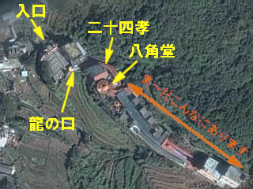
玉皇大帝像があった入口の門が左上。中央やや左上に八角堂があるのがご確認いただけるだろうか。
…まだ、全体の三分の一しか見てないじゃないですか…
八角堂の次に控えるのは長～～～い回廊状の建物。
そこにズラズラ～っとありがたそうな、でもよく見るとそうでもなさそうな神さま仏さまがたくさん並んでいる。
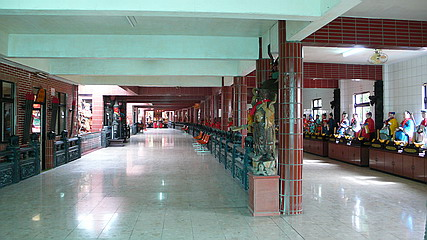
一番手前には人気のある道教神を片っ端から並べた祭壇。
何でもアリな台湾の信仰風景。
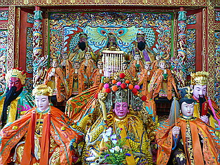
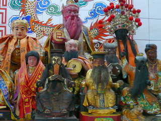
回廊の右手に並ぶのは六十甲子像。六十甲子とはいわゆる干支の６０年バーション。
つまり、十二支の守り本尊が60人にパワーアップした、というか細分化したもの。
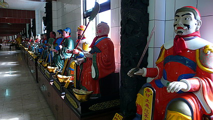
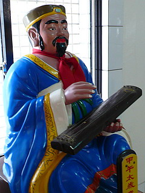
六十甲子には武人、文人、僧侶など様々な方々が思い思いのコスプレを楽しんでいらっしゃる。
一体一体ツッコミを入れながら見ていると、驚愕の神さまが登場！
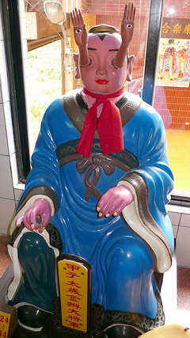
えっ…ええええええ～～～！
これは何だあ～！！！！
目から手が～！＆ 手から目が～！
…私も色々な珍神を見てきたが、これほど突飛な神さまを見た事がない。
たとえ手が千本あろうと顔が十一個あろうと、この神さまの異形にはかないますまい。
こんな凄い神さまを見ちゃったら阿弥陀様の見返りだの観音様が笑っているだのアフロの仏像だのそんなことはどうでも良くなってしまうほど、桁違いのインパクト。
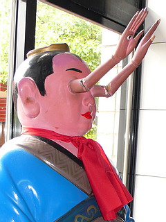
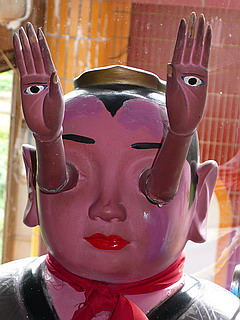
お名前は甲子太歳金辨大将軍。
きっと広い視野、高い見識をお持ちなのだろう。見ざる言わざるが同時に出来る秘匿性も高ポイントだ。
コレを考え出した人自体を神さまにしたいくらいの逸品であった
…と、興奮冷めやらぬまま逆サイドに移動。
途中途中吹き抜けになっており、そこに巨大な神様たちが鎮座している。
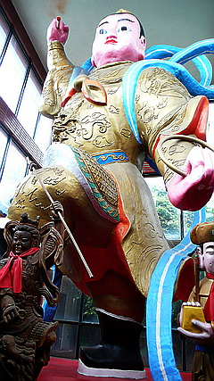
封神演義でお馴染みの哪た（「た」の字は口に乇）
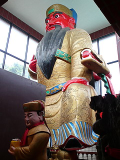 関羽
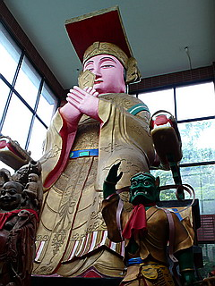 媽祖
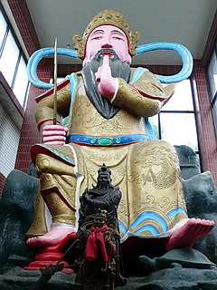 玄天上帝
民間信仰から道教神に入閣した神様、つまり一般民衆人気ランキング上位の神さまが巨大化して勢ぞろいしている。
いずれも堂々とした大仏サイズ。ここにきて何体大仏（仏じゃないけど）を見たんだろう…
ガラスで仕切られた部屋では授業が行われていた。
机に座り熱心に先生の話を聞き入っているのは皆、「何とか帝」ばっかり。
きっと帝王学の授業に違いない。
皆さん真剣に学んでらっしゃいますね。でも授業中は帽子を取られた方が前が見やすいかと。
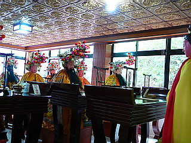
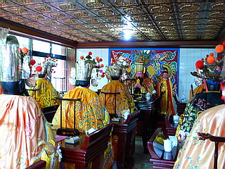
後ろの席では父兄の方々も。きっと授業参観に違いない。
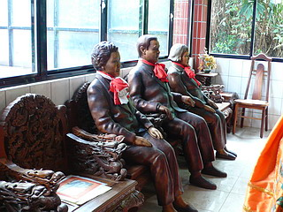
六十甲子と巨大神像にうっとりしながら階段を下りる。
と、今度は何故か船がお出迎え。
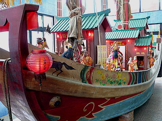
金剛號とある。
船にはこれまたたくさんの神さまが乗っており、ありがたさは七福神の比じゃないっすね。
奥の方からガラガラガッシャ～ン、とシャッターの閉まる音が聞こえてきた。
この時点で夕方の6時頃。
むむむ。マズイ。もしかして閉店時間では…でも入口には7時～20時まで開いていると書いてあったんだけどなあ～。
とにかく先を急ごう。
ファンキーな香りを醸し出す素敵な仲間達のお出迎えもほどほどにスルーし、一番奥の臥佛殿に到着。
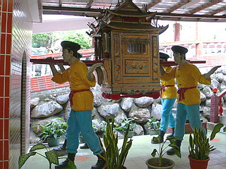
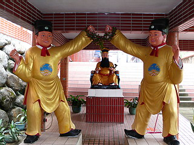
ああ～。やっぱり閉まってた～。
とりあえず外からお顔だけ伺う。
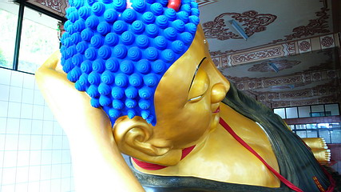
全長約18メートルの堂々たる寝釈迦さんである。最早この寺で何体目の大仏さんかも良く判らなくなってきた…
で、今度は屋上に出るとここにも龍の口が。
ここも残念ながらシャッターが閉まっていた。ただしこちらは普段から開いていない様子。
中が気になるが、まあ、仕方ない。
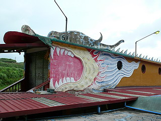
龍の回廊と平行して屋外には羅漢さんが並んでいる。
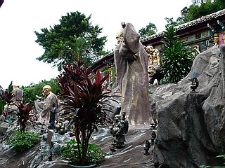
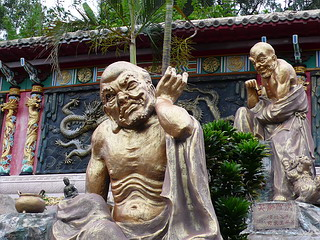
さらに階段を下りる。やっと八角堂方面に戻れる。
千手千眼観音。
この観音サマ、道教の神さまとしても信仰されているそうだ。
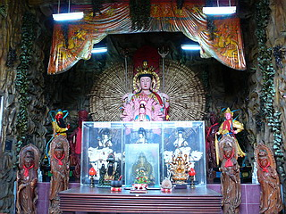
最後は薄暗い部屋で皆さんがお見送り。
いや～面白かったっすよ～。
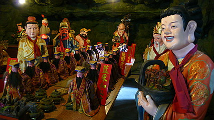
お別れに若い娘さんのかくし芸。下半身がボールになっちゃいました～。
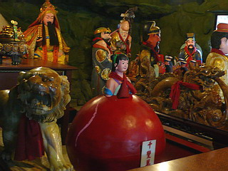
そんなこんなで八角堂に戻り。やっと一回りできた。
八角堂隣の庭でお寺の方に果物をもらい一息ついていた。
さて、これでホントに帰って飯食いに行くか、と、思いつつ何かが引っかかっていた。
…ぽわわわわわ～～～ん…
あ、さっきスルーしたとこに「天堂地府」って書いてあった！
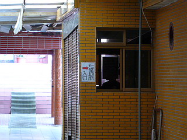
「天堂地府」、つまり「天国地獄」！！！
も、もしかして台湾名物の電動であんな事やこんな事になっちゃっているアレでは！？
しかしシャッターは既にがっちり閉まっている。つか最近開けた形跡がないような…
とりあえず窓から中を伺ってみると、「請由此進 上天堂遊地府」なる貼り紙が。
あとは暗くてよく判らなかったが入口には牛頭馬頭の人形が立っていたような…
くうううううう～～～見たかったぞ。
今後、この寺に行くぞ！という豪の者がいらっしゃったら是非この天堂地府がどうなっているのか御教示願い奉り候。
で、今度こそおしまい。
外は何時しか薄暗くなり、こんなに長い間いたのか、と驚いたが、考えてみたら雨雲がせり出して暗くなっただけだった。
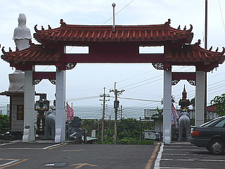
地獄極楽が確認できなかった以外は大満足の恐ろしい珍寺であった。
山門の脇にいた泰国渡来の門番、ヤック。毎日、北の果ての海を眺めている。
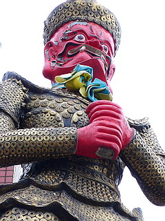
しかしその股間には別の生物が住み付いていた！
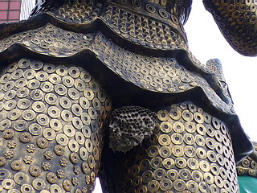
最後まで笑かしてくれるお寺であった。
おまけ
石門から三芝にかけての海沿いはとにかく泣きたくなるような巨大リゾート施設の残骸街道。
台湾バブルの残骸を見る思いだった。
廃墟がお好きな方にもお勧めかと。
↓こんなんとか
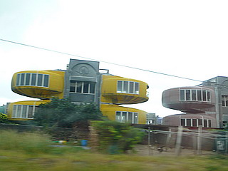
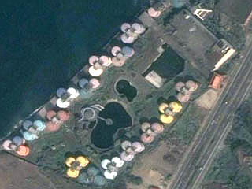
次は飯だ！
台湾大佛列伝3
珍寺大道場 HOME